Documentazione
Nome del progetto
Qui va una breve descrizione.
- Classe/Anno: 5BInf - 24/25
- Author: Mariani Nicolò, Pizzonia Nicolò, Fassina Raffaele
- Creato: 16 dicembre 2024
- Ultima modifica: 6 gennaio 2025
Architettura informazione
Qui va inserito un diagramma che rappresenta la struttura delle informazioni del progetto.
UML

Contenuti del progetto
| guerre dell’oppio Le guerre dell'oppio furono due conflitti, svoltisi rispettivamente dal 1839 al 1842 e dal 1856 al 1860, che contrapposero l'Impero cinese al Regno Unito, i cui interessi militari e commerciali nella regione erano stati posti sotto il controllo della Compagnia britannica delle Indie orientali.Iniziata dalla penetrazione commerciale britannica, che aveva aperto il mercato cinese all'oppio proveniente dall’Impero anglo-indiano, la Cina inasprì i propri divieti sulla droga. |  |
 |
 |
| Nella Londra vittoriana c’era un problema di sfruttamento minorile e disparità di salario. I bambini-operai venivano assunti già all'età di otto-nove anni ed erano costretti a lavorare in condizioni disagiate sia a livello igienico, sia a livello più strettamente lavorativo, dal momento che lavoravano anche dodici ore al giorno, talvolta anche di notte e quasi sempre durante i giorni festivi. | 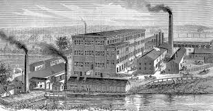 | 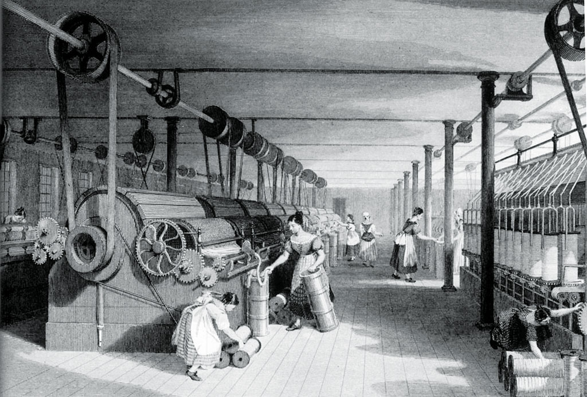 |  |
| Nelle miniere di carbone i bambini iniziavano a lavorare a cinque anni e generalmente morivano prima dei 25. Molti bambini (e adulti) lavoravano 16 ore al giorno. Nel 1802 e nel 1819 leggi delle fabbriche il limite delle ore di lavoro passò a 12 ore in fabbrica e nei cotonifici. Le condizioni brutali portavano a malattie e problemi salutari che abbassavano drasticamente l’aspettativa di vita. | 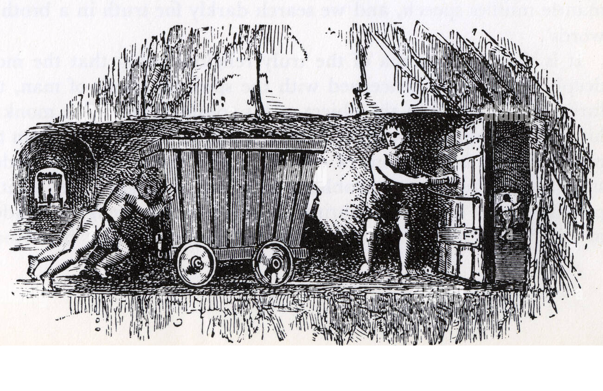 |  |
|
| Osborne House, situata sull'Isola di Wight, è una delle residenze reali che ancora oggi ci permettono di fare un tuffo nella storia britannica. Questo gioiello architettonico, infatti, fu la dimora estiva prediletta della Regina Victoria e del Principe Alberto, un luogo di serenità lontano dalla frenesia di Londra. | 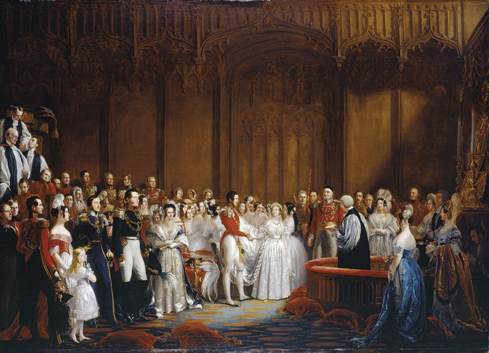 | 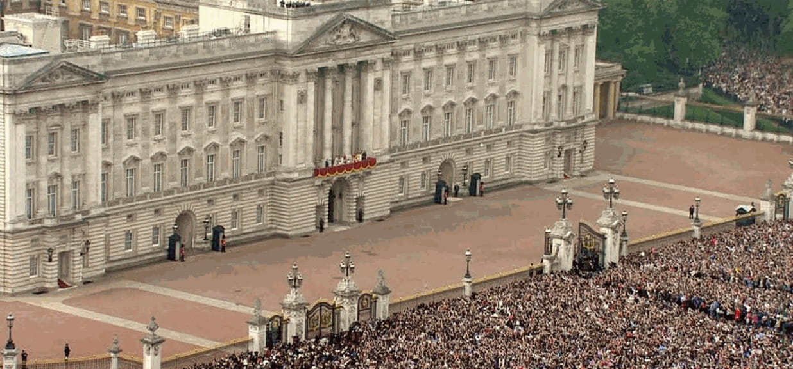 |  |
| Per parlare dei quartieri di lusso a Londra non si può che partire da South Kensington, che si trova a ovest del centro ed è celebre per il fatto di essere una delle zone simbolo della nobiltà londinese: South Kensington è chiamato anche il “Royal district”, nel Kensington Palace nacque la regina Victoria e abitò lady Diana e in questa che è la zona più elegante di Londra si trovano le case più lussuose di Londra e le strade più esclusive come Kensington Road, con i suoi edifici in tipico stile inglese, dall'architettura georgiana a quella vittoriana. All'interno di Kensington si trova anche Notting Hill, uno dei quartieri più di tendenza da molto tempo. Anche Mayfair è non solo una zona prestigiosa di Londra ma uno dei quartier simbolo del lusso londinese: qui infatti oltre alle eleganti abitazioni, si trovano eleganti piazze e i curatissimi giardini. Queste zone venivano viste anche come zone “sicure” in cui si poteva girare tranquillamente. | 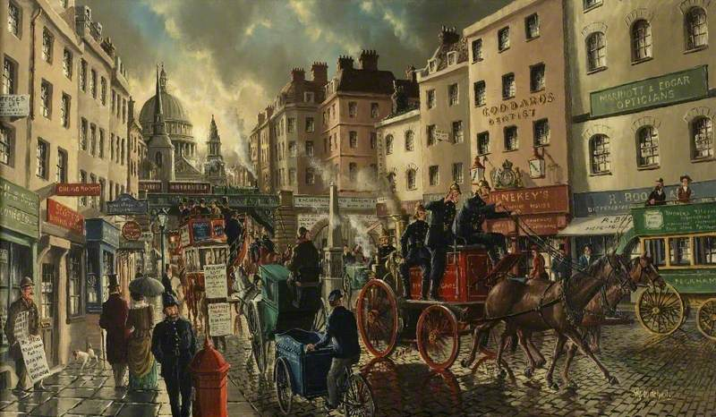 | 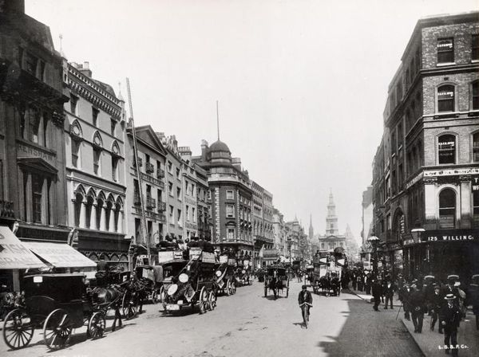 | |
| Le zone più povere della baraccopoli londinese erano situate ad est di Londra. Questi quartieri erano definiti la Londra buia per vari motivi: l’illuminazione era scarsa o assente, i palazzi alti e in condizioni fatiscenti, le strade strette, affollate di persone, oggetti e panni stesi.Oltre alla zona est gli slums si estendevano nel centro di Londra: erano i quartieri St. Giles e Clerkenwell, il “Devil’s Acre” presso Westminster Abbey, Jacob’s Island a Bermondsey, lungo la riva sud del Tamigi, il Mint a Southwark e Pottery Lane in Notting Hill. Gli slums più famosi in epoca vittoriana probabilmente furono i quartieri di Whitechapel, nei quali furono compiuti i delitti di jack lo Squartatore. |  |
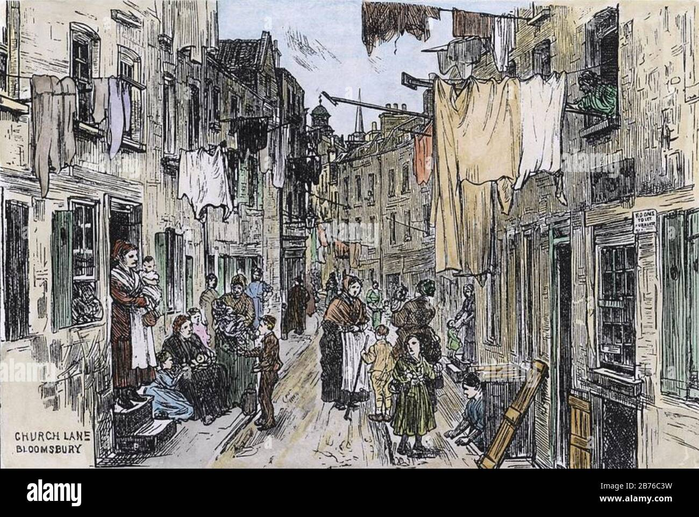 | 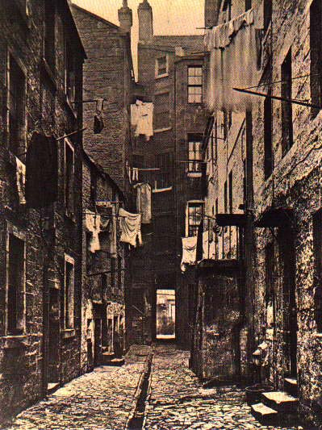 |
| L'epoca vittoriana, che va dal 1837 al 1901 durante il regno della regina Vittoria, è stata un'epoca di notevoli innovazioni e realizzazioni ingegneristiche che hanno cambiato per sempre il panorama della società moderna. Questo periodo vide la nascita di tecnologie e infrastrutture rivoluzionarie, caratterizzate dalla costruzione di sistemi ferroviari iconici che rivoluzionarono i trasporti, come le grandi locomotive e le estese reti ferroviarie che collegarono città e regioni come mai prima. Tra i trionfi ingegneristici dell'epoca vi furono le squisite strutture in ferro e vetro, come il Crystal Palace, progettato per la Grande Esposizione del 1851, che mise in mostra l'ingegno di architetti e ingegneri vittoriani. L'epoca ha anche inaugurato la costruzione di opere di ingegneria civile durature come il Tower Bridge e la vasta rete di acquedotti, ponti e gallerie che hanno trasformato gli ambienti urbani e facilitato il commercio. Inoltre, lo sviluppo di sistemi igienico-sanitari e di iniziative per la salute pubblica illustrarono una crescente comprensione dell'ingegneria al servizio della società, migliorando la vita nelle città densamente popolate. L'uso di materiali come l'acciaio e i progressi di tecniche come i ponti a sbalzo hanno spinto i confini di ciò che era considerato possibile, segnando l'epoca vittoriana come un momento cruciale nella storia dell'ingegneria che ha gettato le basi per le infrastrutture moderne su cui facciamo affidamento oggi. |  |
 |
|
| West End è una delle tre grandi aree principali che compongono Londra. Durante il periodo vittoriano, come importanza, era considerato il vero cuore della città. Al suo interno figuravano gli storici palazzi governativi, le abitazioni più lussuose, i negozi più esclusivi e i locali più alla moda. Era, in breve, la parte borghese (e aristocratica) della metropoli, pulita, ordinata ed elegante, patria di club per gentiluomini ed eventi mondani della società da bene. Nella cultura di massa il West End si pone in diretta contrapposizione all'East End, dove il primo è simbolo di progresso e il secondo di arretratezza. |  |
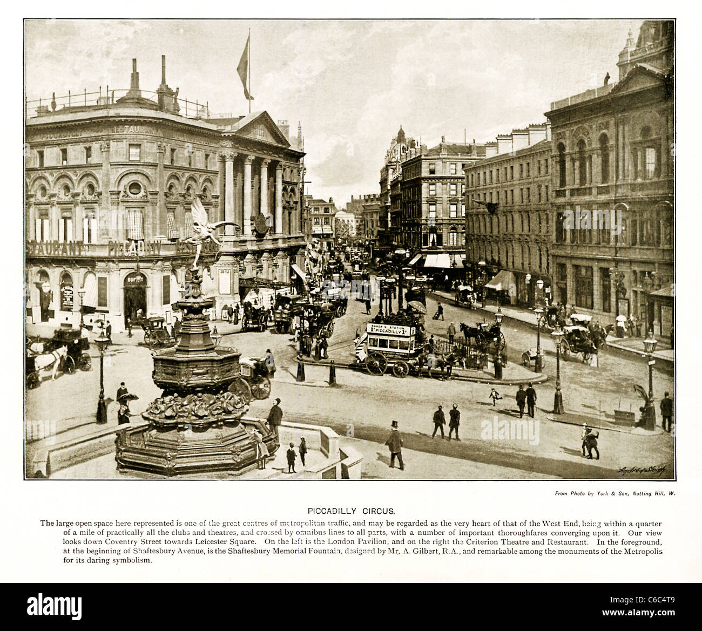 | |
| Parole forti quelle che il quotidiano londinese The Poor Man's Guardian riservò al quartiere di Spitalfields il 18 febbraio 1832. Era questa, nel XIX secolo, l'area dell'East End più povera e disperata di Londra, sprofondata nel degrado a causa del declino dell'industria tessile. Sul finire dell'Ottocento Spitalfields vantava il più alto tasso di criminalità, soprattutto omicidi e prostituzione, della città, e nel 1881 la stessa forza di polizia la denunciò come "area più pericolosa della metropoli". La lentissima ripresa cominciò appena durante il XX secolo, e tutt'oggi rimane uno dei quartieri meno sviluppati di Londra. Ne Il mistero di Virginia Hayley Spitalfields, e in particolare i quartieri limitrofi, sarà teatro di inquietanti indagini investigative. | 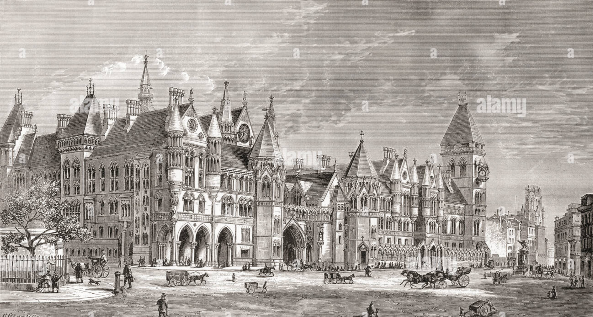 | ||
| Situato nel distretto di Westminster, Covent Garden è uno dei quartieri più famosi di Londra. Fondato nel 1540 come luogo di mercato, divenne col passare dei secoli una vera e propria attrazione, grazie all'edificazione di teatri, caffè e locali notturni (bettole poco raccomandabili, all'epoca). Il suo declino si manifestò nel XVIII secolo, quando il boom urbano della città spostò l'interesse dei londinesi verso mete più "moderne". Molte attività vennero chiuse o trasferite altrove, e Covent Garden sopravvisse unicamente come mercato ortofrutticolo, guadagnando l'infelice nomea di "Piazza di Venere", dove tutto era consentito, e ogni tipo di affare, lecito o meno, veniva trattato alla luce del sole. La rinascita avvenne nella prima metà del XIX secolo. La "vecchia Covent Garden" fu spazzata via, abbattuta e ripulita. Al suo posto sorse la caratteristica struttura al coperto di stile neoclassico, simbolo, tra gli altri, della Londra vittoriana popolare che spesso viene proposta nei film in costume o nelle opere di genere. |  |
 |
Wireframes
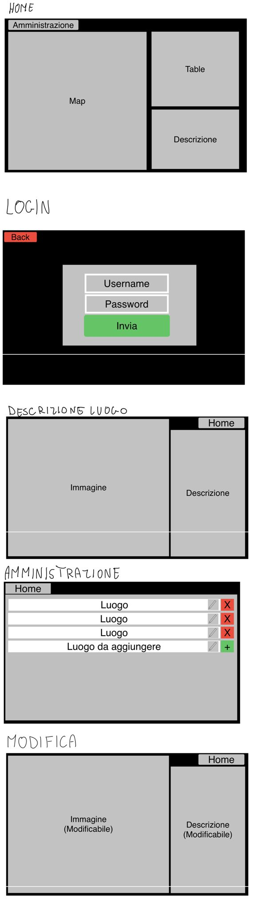
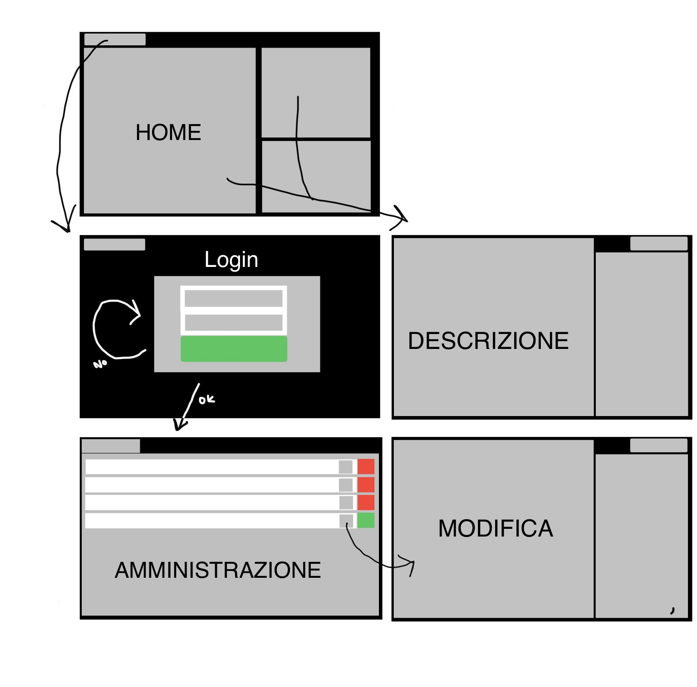
Il progetto
In questa sezione vanno inserite ulteriori informazioni aggiuntive (es. credenziali) ed il link al progetto